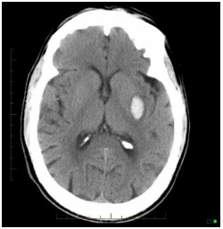
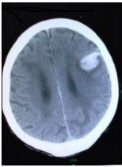
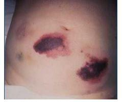

Questão 2 · Heparina não f racionada · 4000184373Homem, 32a, internado há três dias após fratura de tíbia por acidente automobilístico, apresentou quadro de dispneia súbita. Foi feito o diagnóstico de tromboembolismo pulmonar e iniciada a anticoagulação plena com heparina não fracionada. No dia seguinte, após apresentar fraqueza em dimídio direito, foi suspensa a heparina e realizada tomogra a computadorizada de crânio. A CONDUTA É:

A Prescrever vitamina K.
B Retomar a heparina não fracionada.
C Prescrever plasma fresco congelado.
D Prescrever protamina.
Questão 3 · Anticoagulantes orais diretos · 4000183892Paciente de 48 anos, portador de cardiomiopatia hipertró ca em forma apical (Yamaguchi) e com brilação atrial, vinha em uso de succinato de metoprolol 100 mg e dabigratan 150 mg de 12/12 horas para controle de sintomas. Apresentou hematúria maciça, com instabilidade hemodinâmica e choque hipovolêmico. Após estabilização clínica e transfusão de hemoderivados, realizou TC que evidenciou imagem sugestiva de neoplasia de bexiga. Ao ser avaliado por um urologista, este indicou abordagem cirúrgica de urgência. Antes de iniciar a cirurgia, é necessário fazer a reversão da anticoagulação com
A protamina.
B andexanet alfa.
C complexo protrombínico.
D idarucizumabe
Revisar: possível letra faltando em enunciado
Questão 4 · Anticoagulantes antagonistas da vitamina K · Trombose na gestação · Heparinas · 4000182115Primigesta, 34 anos, com 16 semanas de gestação, comparece ao ambulatório de gestação de alto risco para iniciar seguimento de pré-natal. Sem queixas clínicas e obstétricas. Antecedentes pessoais: cardiopatia reumática com válvula metálica, classe funcional I, em uso de warfarin 5 mg uma vez ao dia. O resultado do RNI (Razão Normalizada Internacional) colhido há 1 semana apresenta valor de 1,8 vezes o controle. Qual é a melhor conduta com relação à anticoagulação dessa paciente?
A Aumentar a dose de warfarin para 7,5 mg uma vez ao dia.
B Suspender warfarin e iniciar dose terapêutica de enoxaparina.
C Manter a dose de warfarin 5 mg uma vez ao dia.
D Suspender warfarin e iniciar AAS 100 mg uma vez ao dia.
Questão 5 · Heparina baixo peso molecular · Anticoagulantes orais diretos · 4000181613São considerados anticoagulantes, por bloqueio do fator Xa, EXCETO
A rivaroxabana.
B edoxabana.
C enoxaparina.
D dabigatrana.
E apixabana.
Questão 6 · Anticoagulantes antagonistas da vitamina K · 4000181343Mulher de 55 anos faz uso crônico de varfarina 5mg ao dia, devido trombose venosa profunda há 4 meses. A paciente é diabética e apresenta uma infecção grave na perna. Devido a piora do quadro e odor, ela foi à emergência, onde foi indicada amputação suprapatelar, devido a gangrena úmida. INR do dia: 3. O que a equipe cirúrgica deve fazer para diminuir o risco de sangramento durante a amputação?
A Suspender o varfarina, transfundir plaquetas.
B Suspender o varfarina, aplicar sulfato de protamina.
C Suspender o varfarina, realizar a amputação em 5 dias.
D Suspender o varfarina, aplicar vitamina K e reservar plasma.
Questão 7 · Diagnóstico da trombocitopenia induzida pela heparina HIT · 4000181250Paciente crítico, durante internação prolongada em unidade de terapia intensiva, e em uso de pro laxia medicamentosa contra eventos tromboembólicos, apresenta trombocitopenia induzida pela heparina. Em relação ao quadro apresentado, assinale a alternativa correta.
A Costuma ocorrer mais frequentemente antes do 5º dia de uso da heparina.
B Há presença de anticorpos antiplaquetários dirigidos contra o fator 4 plaquetário.
C Em geral, esse diagnóstico não está associado a complicações trombóticas.
D Possui baixa incidência em pacientes com exposição recorrente à heparina.
E O sangramento gastrointestinal é uma manifestação comum, atingindo cerca de 50% dos pacientes.
Questão 8 · Anticoagulantes antagonistas da vitamina K · Manejo do sangramento associado aos anticoagulantes orais · 4000191044Mulher, 69 anos, é admitida no pronto-socorro com queixa de fezes escurecidas e fraqueza. Tem estenose mitral, brilação atrial, acidente vascular cerebral isquêmico prévio e está em uso de anticoagulação oral com warfarina. Encontra-se em bom estado geral, descorada 2+/4+ e hemodinamicamente estável. Exames laboratoriais: hemoglobina = 7,0 g/dl e INR = 14,5. O tratamento de escolha para essa paciente é:
A Transfusão de crioprecipitado.
B Reposição de complexo protrombínico ou plasma fresco.
C Reposição de fator VII ativado.
D Transfusão de um concentrado de plaquetas por aférese.
E Administração de protamina.
Questão 9 · Anticoagulantes antagonistas da vitamina K · 4000170067Assinale a alternativa que apresenta a razão para a utilização de anticoagulante injetável concomitante ao início da terapia por varfarina na anticoagulação.
A A varfarina bloqueia a ativação de fatores da cascata de coagulação e a produção dos inibidores de coagulação (proteína C e S) dependentes da vitamina K.
B Não se pode confiar na absorção oral da varfarina, sendo esse o motivo pelo qual há tanta variabilidade no resultado do tempo de protrombina.
C O uso de anticoagulantes parenterais traz benefício na terapêutica intra-hospitalar pela sua fácil via de administração.
D A varfarina é uma pró-droga que chega inativada ao fígado, pelo contato com as proteínas C e S, sendo somente ativada após o efeito de primeira passagem pela enzima P450.
Questão 10 · Diagnóstico da trombocitopenia induzida pela heparina HIT · 4000169031Um homem de 78 anos, obeso, recebe enoxaparina pro lática no pós-operatório de artroplastia de quadril. No 6º dia após o início do anticoagulante, detecta-se plaquetopenia de 50 mil/microL, caindo para 40 mil no dia seguinte. A conduta mais adequada é
A trocar heparina de baixo peso molecular por heparina não fracionada em dose plena.
B suspender heparina e iniciar fondaparinux.
C apenas observar, com contagem diária de plaquetas e suspender heparina se cair abaixo de 10 mil/microL.
D manter enoxaparina na dose profilática e administrar corticosteroide 1 mg/kg/dia IV.
E suspender enoxaparina e iniciar heparina não fracionada em dose profilática.
Questão 11 · Trombocitopenia induzida pela heparina HIT · 4000168566A corrida pelo desenvolvimento de vacinas contra o SARS-COV-2 resultou na rápida aprovação de imunizantes pelas agências regulatórias. Infelizmente, isto aumentou as chances de aparecimento de efeitos colaterais inicialmente não descritos nos estudos. Um dos eventos mais graves foi a Trombocitopenia Trombótica Induzida por Vacina (VfTT). Esta complicação lembra muito a siopatologia da Trombocitopenia Induzida pela Heparina (HIT), cujo principal anticorpo envolvido é:
A Anti-C5;
B Anti-PF4;
C Anti-glicoproteína IIB/lllA;
D ADAMTS-13;
E Anti-CD55 e 59.
Questão 12 · Anticoagulantes antagonistas da vitamina K · 4000166199Um paciente de 59 anos de idade foi à consulta, no ambulatório de clínica médica, para controle do tempo de protrombina/INR pelo uso de varfarina, devido à brilação atrial crônica, e pediu exemplos de alimentos que deveria evitar. Com base nesse caso hipotético, assinale a alternativa que apresenta todos os alimentos que deverão ser evitados.
A agrião, palmito e suco de
B espinafre, tomate e suco de laranja
C couve-flor, cenoura e suco de limão
D nabo, repolho e suco de uva
E alface, brócolis e chá verde
Questão 13 · Anticoagulantes antagonistas da vitamina K · 4000163445Um paciente adulto em uso de varfarina realizou dosagem de Tempo de Atividade de Protrombina (TAP) que apresentou resultado de Relação Normatizada Internacional (RNI) igual a 8. O paciente não apresenta sangramento, equimoses ou hematomas. Nesse caso, a conduta correta a ser adotada é:
A suspender a varfarina, administrar vitamina K intramuscular e reintroduzir varfarina quando o RNI estiver abaixo de 2.
B reduzir a dose de varfarina em 50% e reavaliar o paciente ambulatorialmente em uma semana com novo TAP/RNI.
C suspender a varfarina, administrar plasma fresco e reintroduzir varfarina com dose ajustada no dia seguinte.
D reduzir a dose de varfarina em 25%, administrar vitamina K via oral e reavaliar o paciente em uma semana com novo TAP/RNI.
E suspender a varfarina e monitorar o TAP/RNI, reintroduzindo a varfarina em dose reduzida, assim que o RNI voltar a faixa terapêutica indicada.
Questão 14 · Anticoagulantes orais diretos · Novos anticoagulantes orais NOACs · 4000145130Anticoagulantes orais diretos DOAC Com relação às indicações dos anticoagulantes, assinale a alternativa correta
A A rivaroxabana foi aprovada para reduzir o risco de AVC e embolia sistêmica em pacientes com FA de etiologia não valvar.
B O Edoxaban pode ser utilizado indiscriminadamente e com segurança, mesmo em paciente com insuficiência hepática.
C Pacientes com Embolia Pulmonar não podem ser tratados com rivaroxabana.
D O apixabana somente deve ser utilizado em pacientes com embolia sistêmica e FA de etiologia valvar.
Questão 15 · Fisiologia · 4000072762Qual proteína é o mediador primário da adesão plaquetária?
A Colágeno.
B Endotelina.
C Fator tissular.
D Trombina.
E Fator de Von Willebrand.
Questão 16 · Heparina baixo peso molecular · 4000065640A heparina de baixo peso molecular possui como um mecanismo de ação a inibição do fator:
A Xa.
B IXa.
C VIIa.
D Va.
E IVa.
Questão 17 · Anticoagulantes antagonistas da vitamina K · Antagonistas da vitamina K · 4000050042Paciente masculino de 76 anos procura a emergência devido à preocupação com resultado de exame laboratorial alterado. Nega sintomas. Apresenta história de brilação atrial, dislipidemia, diabetes e hipertensão arterial. Faz uso de rosuvastatina 20 mg ao dia, metformina 850 mg duas vezes ao dia e enalapril 20 mg ao dia. Apresenta FC 68/min, PA 134/80 mmHg, FR 12/min, temperatura 36,7 °C, e SpO₂ 99% em ar ambiente. Ao exame físico, não se constata equimose, hematoma ou sangramentos. Revisão de sistemas é negativa. Exame laboratorial trazido demonstra tempo de protrombina/INR = 8,5. Qual é a conduta correta para esse caso, segundo guidelines recentes?
A Omitir varfarina até nível terapêutico e, então, reiniciar varfarina com redução de 10- 15% na dose semanal.
B Administrar vitamina K oral e omitir varfarina até nível terapêutico e, então, reiniciar varfarina com redução de 10- 15% na dose semanal.
C Administrar vitamina K parenteral e omitir varfarina até nível terapêutico e, então, reiniciar varfarina com redução de 10-15% na dose semanal.
D Administrar plasma fresco congelado e omitir varfarina até nível terapêutico e, então, reiniciar varfarina com redução de 10-15% na dose semanal.
E Administrar concentrado de complexo protrombínico e omitir varfarina até nível terapêutico e, então, reiniciar varfarina com redução de 10-15% na dose semanal.
Questão 18 · Anticoagulantes antagonistas da vitamina K · Anticoagulação oral · 4000009563A varfarina é altamente e caz na prevenção de fenômenos tromboembólicos na FA, com redução de 64% do risco nos pacientes adequadamente tratados. NÃO podemos aceitar que:
A Menos metade dos pacientes não são adequadamente tratados, por motivos que variam desde a dificuldade de controle frequente de RNI até alto risco de sangramento.
B Pacientes em uso de varfarina nem sempre se encontram na faixa terapêutica adequada (em geral RNI entre 5 e 6).
C Ocorre interação medicamentosa, principalmente antibióticos e anti-inflamatórios.
D Ocorre interação com alimentos, uso irregular da medicação, intercorrências clínicas agudas, entre outros.
Questão 19 · Anticoagulantes antagonistas da vitamina K · Antagonistas da vitamina K · 4000124569Paciente chegou ao OS, com INR de 6, sem sangramentos com exame físico normal. De qual droga abaixo ele mais se beneficiará?
A Vitamina K1 2,5 mg via oral
B Plasma fresco
C Complexo protrombínico
D Vitamina K 10 mg IV
Questão 20 · Fármacos e agentes relacionados a hemostasia secundária · 4000122800Atualmente temos disponível uma maior variedade de anticoagulantes orais. O início da terapia com cada um deles varia bastante. A recomendação correta sobre o início do tratamento em um paciente adulto com trombose venosa profunda é o uso da:
A warfarina: iniciar com 5mg/dia, sempre associado a outro anticoagulante, preferencialmente enoxaparina. Manter a associação até INR adequado e não se deve aumentar a dose de warfarina antes de 05 dias de tratamento.
B rivaroxabana: iniciar 15mg de 12/12h por 15 dias, seguido de 20mg 1x /dia, sendo necessário associar outro anticoagulante nos primeiros 07 dias de tratamento.
C dabigatrana; iniciar 110mg 2x/dia por 15 dias. Manutenção com 110mg 1x/dia e não há necessidade de associação com outro anticoagulante.
D apixabana: iniciar com 05mg 2x/dia por 07 dias, seguido de 5mg 1x/dia e não há necessidade de associação com outro anticoagulante.
E os anticoagulantes orais devem sempre ser acompanhados de uso de heparina devido ao risco de deficiência de proteína C e S.
Questão 21 · Anticoagulantes antagonistas da vitamina K · Antagonistas da Vitamina K · 4000101430A conduta para o paciente que faz uso de warfarina no período pré-operatório é:
A Suspender a dose de warfarina do dia anterior, iniciando heparina de baixo peso molecular em dose profilática.
B Ajustar a dose de warfarina para manter RNI abaixo de 1,5 no dia da cirurgia, iniciando heparina de baixo peso molecular em dose terapêutica.
C Suspender a dose de warfarina cinco dias antes do procedimento, iniciando heparina de baixo peso molecular em dose terapêutica.
D Substituir a dose de warfarina por anticoagulante oral inibidor de fator Xa trinta dias antes do procedimento.
Questão 22 · Anticoagulantes antagonistas da vitamina K · Trombose Venosa Prof unda TVP · 4000079315Atualmente temos disponível uma maior variedade de anticoagulantes orais. O início da terapia com cada um deles varia bastante. A recomendação correta sobre o início do tratamento em um paciente adulto com trombose venosa profunda é o uso da
A warfarina: iniciar com 5mg/dia, sempre associado a outro anticoagulante, preferencialmente enoxaparina. Manter a associação até INR adequado e não se deve aumentar a dose de warfarina antes de 05 dias de tratamento.
B rivaroxabana: iniciar 15mg de 12/12h por 15 dias, seguido de 20mg 1x/dia, sendo necessário associar outro anticoagulante nos primeiros 07 dias de tratamento.
C dabigatrana: iniciar 110mg 2x/dia por 15 dias. Manutenção com 110mg 1x/dia e não há necessidade de associação com outro anticoagulante.
D apixabana: iniciar com 05mg 2x/dia por 07 dias, seguido de 5mg 1x/dia e não há necessidade de associação com outro anticoagulante.
Questão 23 · Fármacos e agentes relacionados a hemostasia primária antiplaquetários · 4000042925Sobre os distúrbios plaquetários a alternativa que corresponde aquela em que há de ciência da glicoproteína do complexo GpIb/V/IX é:
A Von Willebrand
B Trombastenia de Glanzmann
C Bernard-Soullier
D Síndrome de Diamond- Blackfann
E Síndrome de Evans
Questão 24 · Fármacos e agentes relacionados a hemostasia secundária · 4000124487Considere as assertivas abaixo sobre vantagens do novo anticoagulante oral rivaroxabana quando comparado com warfarin. I - É usado em dose xa (de acordo com a função renal), sem necessidade da monitorização laboratorial rotineira da anticoagulação; II. - A reversão da intoxicação pelo fármaco ocorre com a administração de doses menores de vitamina K; III. - O início do efeito anticoagulante é mais rápido. Quais são CORRETAS?
A Apenas I.
B Apenas II.
C Apenas III.
D Apenas I e III.
E I, II e III.
Questão 25 · Anticoagulantes antagonistas da vitamina K · Anticoagulação oral · Anticoagulantes orais diretos · 4000121712Assinale a alternativa que correlaciona corretamente o anticoagulante com seu principal mecanismo de ação.
A Warfarin - agonista da vitamina K.
B Heparina - agonista da antitrombina III.
C Dabigratana - agonista da trombina.
D Rivaroxabana - inibidor indireto do fator Vila.
E Fondaparinux - inibidor direto do fator de Vila.
Questão 26 · Anticoagulantes antagonistas da vitamina K · Cirurgia · 4000110675Homem, 67 anos, em uso de warfarina devido a brilação atrial há 3 meses, em investigação etiológica. Vem ao ambulatório de anticoagulação relatando 3 idas ao pronto socorro por equimoses e epistaxe, sempre com intoxicação cumarínica, tendo recebido vitamina k nessas ocasiões. Utiliza o medicamento em horários diversos, eventualmente com e eventualmente sem alimentação, em geral sem folhas verdes. Solicita sua orientação quanto ao uso correto da warfarina. Você orienta que:
A Deverá suspender a warfarina e usar ácido acetilsalicílico
B Deverá manter warfarina, sempre após almoço rico em folhas verdes, com controle de atividade de protrombina semestral
C Deverá usar em jejum e suspender folhas verdes enquanto estiver utilizando warfarina, com controle de tempo de tromboplastina parcial ativada
D Deverá manter medicação em jejum e poderá usar folhas verdes à vontade, desde que o faça regularmente e com controle de atividade de protrombina
E Como o diagnóstico foi há mais de 28 dias, não tem mais indicação de anticoagulantes ou antiagregantes
Questão 27 · Heparinas · 4000104387Assinale a alternativa que contém as melhores terapias para reverter anticoagulação causada pelo uso da Heparina:
A Plasma Fresco e Criopreciptado
B Vitamina K e Plasma Fresco
C Plasma Fresco e Sulfato de Protamina
D Ácido Trenexâmico e Plasma Fresco
Questão 28 · Anticoagulantes antagonistas da vitamina K · Agentes anticoagulantes · Anticoagulantes orais diretos · 4000064335Com relação aos anticoagulantes orais e seus respectivos mecanismos de ação, numere a coluna da direita de acordo com sua correspondência com a coluna da esquerda. 1. Inibidor direto da trombina. 2. Inibidor direto do fator Xa. 3. Antagonista da vitamina K. ( ) Warfarin. ( ) Rivaroxabana. ( ) Dabigatrana. ( ) Apixabana. Assinale a alternativa que apresenta a numeração CORRETA da coluna da direita, de cima para baixo.
A 1 – 3 – 2 – 1.
B 3 – 2 – 2 – 1.
C 1 – 3 – 3 – 2.
D 3 – 2 – 1 – 2.
E 2 – 1 – 1 – 3.
Questão 29 · Anticoagulantes antagonistas da vitamina K · Fator VII · Fator II · 4000056623Todos os fatores de coagulação a seguir são dependentes de vitamina K, exceto:
A Fator X;
B Fator VII;
C Proteína C;
D Proteína S;
E Fator VIII;
Questão 30 · Anticoagulantes antagonistas da vitamina K · 4000052109Paciente de 35 anos, em uso de contraceptivo oral, apresenta trombose venosa profunda aguda de membro inferior. No 4° dia de uso de cumarínico apresentou necrose cutânea nos membros inferiores. Concluímos que:
A houve piora do quadro trombótico
B houve inibição dos fatores VIII, IX e X da coagulação
C houve uma dosagem excessiva de cumarínico
D houve complicação do uso do cumarínico
Questão 31 · Tratamento da trombocitopenia induzida pela heparina HIT · Fondaparinux · 4000033560Diagnóstico da trombocitopenia induzida pela heparina HIT J.K.L, 67 anos, sexo feminino, balconista, está em uso de dose terapêutica de enoxaparina por trombose venosa profunda após artroplastia de joelho. Após 6º dia de uso da referida medicação, a contagem de plaquetas é de 66.000/mm³ (contagem de plaquetas antes da anticoagulação era de 212.000/mm³). Não está em uso de outros medicamentos e apresenta-se assintomática. Diante deste contexto, assinale a alternativa ERRADA:
A Deve-se evitar o uso de fondaparinux (inibidor indireto de fator Xa).
B Esta condição resulta da formação de anticorpos contra complexo heparina/fator-4- plaquetário.
C Inibidores diretos da trombina constituem-se em opção terapêutica.
D Trombose (arterial ou venosa) é uma complicação frequente.
Questão 32 · Anticoagulantes antagonistas da vitamina K · 4000126258São fatores de coagulação sintetizados no fígado e dependentes da vitamina K:
A Fibrinogênio, II, VIII e X.
B II, V, VIII e X.
C II, VII, IX e X.
D Fibrinogênio, VIII, IX e X.
E VII, VIII, Fibrinogênio e IX.
Questão 33 · Anticoagulantes antagonistas da vitamina K · 4000098117Homem, 40a, faz uso cronicamente de varfarina 10 mg/dia, e possui antecedente de trombose venosa profunda. Chega ao pronto-socorro com sangramento gengival e urinário volumoso. Bom estado geral; FC = 80 bpm; PA = 110 x 80 mmHg; Hb = 12,5 g/dl; Ht = 38% RNI = 10. O tratamento é:
A Transfundir plasma fresco congelado.
B Administrar imunoglobulina intravenosa.
C Administrar vitamina K.
D Suspender a varfarina e observar.
Questão 34 · Anticoagulantes orais diretos · 4000088328Com relação aos agentes antitrombóticos listados abaixo, qual representa um inibidor do fator Xa?
A Dabigatrana.
B Prasugrel.
C Rivaroxaban.
D Tirofiban.
E Femprocumona.
Questão 35 · Heparina não f racionada · 4000088286Imediatamente após a administração intravenosa de 5.000 UI de heparina, seu efeito pode ser revertido com:
A 10 mg de sulfato de protamina.
B 20 mg de sulfato de protamina.
C 30 mg de sulfato de protamina.
D 40 mg de sulfato de protamina.
E 50 mg de sulfato de protamina.
Questão 36 · Diagnóstico da trombocitopenia induzida pela heparina HIT · 4000071868Uma das formas de diagnóstico de trombocitopenia induzida por heparina é a aplicação do algoritmo 4T, composto de quatro critérios. Quando os quatro critérios envolvidos sugerem o diagnóstico de trombocitopenia por heparina ocorre a seguinte combinação:
A Queda maior do que 50% e plaquetas maiores do que 20.000/mm³, início 5-14 dias após a exposição a heparina, presença de novo episódio de trombose e ausência de outros diagnósticos.
B Queda maior do que 30% ou plaquetas menores do que 20.000/mm³, início 15-30 dias após a exposição à heparina, necrose de pele nova e ausência de diagnóstico alternativo.
C Queda maior do que 30% ou plaquetas menores do que 20.000/mm³, início 15-30 dias após a exposição à heparina, petéquias e sangramentos e ausência de diagnóstico alternativo.
D Queda maior do que 50% e plaquetas maiores do que 20.000/mm³, início 5-14 dias após a exposição a heparina, petéquias e sangramentos e ausência de outros diagnósticos.
Questão 37 · Laboratório da hemostasia · 4000061497Para investigar alterações de hemorragia ou de coagulação, pode ser utilizada a dosagem do Tempo de Tromboplastina Parcial (PTT), que avalia a via:
A Extrínseca e comum e deficiência de fatores X e XI.
B Extrínseca e comum e deficiência de fatores VI, IX e XI.
C Intrínseca e comum e deficiência de fatores VIII, IX e XI.
D Intrínseca e comum e deficiência de fatores V, VI, VII e X.
Questão 38 · Laboratório da hemostasia · 4000047969Sobre os distúrbios da coagulação, relacione as colunas a seguir: (A) Uso terapêutico de heparina; (B) Uso terapêutico de cumarínico; (C) Prolongamento do TP e TTPa; (D) Prolongamento do TTPa; (E) Anormalidade isolada do TP. ( ) Deficiência do fator VII; ( ) Hemofilias ou deficiência do fator XI; ( ) Deficiência de fatores V, X, II, ou fibrinogênio; ( ) Alargamento do TP; ( ) Alargamento do TTPa.
A E-D-C-B-A.
B E-B-C-A-D.
C D-E-C-A-B.
D C-E-D-A-B.
E D-C-E-B-A.
Questão 39 · Heparina não f racionada · 4000032194Em relação a paciente submetido a pro laxia para trombose venosa profunda por tempo prolongado com heparina não fracionada, assinale a alternativa ERRADA:
A Esta droga é clareada principalmente pelos receptores situados no endotélio, macrófagos e rins
B Pode apresentar trombocitopenia autoimune
C Seu mecanismo de ação se faz por inativação de vários fatores da cascata de coagulação, sendo os mais sensíveis a trombina e o fator Xa
D Sua maior afinidade por proteínas plasmáticas lhe confere maior biodisponibilidade e maior meia-vida plasmática
Questão 40 · Anticoagulantes antagonistas da vitamina K · Hematologia · 4000021900A warfarina é um dos medicamentos mais utilizados em caso de necessidade de anticoagulacão prolongada. A dose inicial, em geral, é de 5 mg por dia, devendo ser ajustada até manter um INR entre:
A 1,0 e 1,5.
B 1,5 e 2,0.
C 2,0 e 3,0
D 3,0 e 3,5.
E 3,5 e 4,0.
Questão 41 · Anticoagulantes antagonistas da vitamina K · Anticoagulantes orais diretos · Heparinas · 4000087582Com relação às drogas anticoagulantes é correto afirmar que:
A as heparinas de baixo peso molecular são eficientes na profilaxia da trombose venosa, mas não no tratamento da trombose já estabelecida.
B a anticoagulação realizada com heparina intravenosa deve ser monitorada com medidas diárias da atividade da protrombina.
C a terapia anticoagulante com dicumarínicos deve sempre ser iniciada com doses maiores do que a dose de manutenção (dose de ataque).
D o uso de heparina é contra-indicado no primeiro e no terceiro trimestres da gravidez.
E os dicumarínicos podem apresentar efeito prócoagulante no início do tratamento.
Questão 42 · Anticoagulantes orais diretos · Tratamento Cirúrgico · Tratamento Clínico · 4000079967Homem de 89 anos relata antecedente de arritmia cardíaca, em uso de rivaroxabana 20 mg ao dia, há 3 meses. Evoluiu, há 4 horas, com disartria sem outros sinais neurológicos focais. O paciente realizou CT crânio cujo resultado apresenta-se ao lado (VER IMAGEM). O manejo correto desse paciente é:

A Iniciar ácido tranexâmico endovenoso.
B Realizar neurocirurgia de urgência.
C Iniciar concentrado de complexo protrombínico.
D Associar aspirina 100 mg via enteral.
Questão 43 · Tratamento da trombocitopenia induzida pela heparina HIT · 4000011932Diagnóstico da trombocitopenia induzida pela heparina HIT Homem de 55 anos, paraplégico por acidente automobilístico há 15 anos, é internado por pneumonia adquirida na comunidade. Está no oitavo dia de internamento hospitalar (DIH), com boa resposta ao antibiótico endovenoso, quando foi observado edema isolado de perna esquerda. Ultrassonogra a com doppler evidenciou trombose venosa profunda na perna edemaciada, mesmo com uso diário de enoxaparina 40mg via SC. Os exames da admissão mostravam plaquetas: 300.000/mm3. O exame de hoje (8º DIH) evidencia plaquetas: 60.000/mm3. Paciente não fez uso de quaisquer medicamentos nos 12 meses prévios ao internamento. Qual conduta deve ser adotada nesse momento?
A Suspender enoxaparina e iniciar warfarin.
B Trocar enoxaparina por fondoparinux.
C Manter enoxaparina em 1mg/kg de peso 2x/dia.
D Trocar enoxaparina por heparina não fracionada.
Questão 44 · Fármacos e agentes relacionados a hemostasia secundária · 4000115476Em relação à terapia anticoagulante, é correto afirmar:
A A enoxaparina tem a vantagem de não necessitar de controle do T TPa e pode ser usada em paciente com disfunção renal leve a moderada, bastando fazer o ajuste de dose recomendado em bula.
B A enoxaparina tem menor risco de levar a plaquetopenia e trombose relacionadas à heparina do que a heparina não fracionada, entretanto não pode ser usada no tratamento dessas condições.
C O início do tratamento com varfarina requer associação com heparina ou heparinoides nos dois primeiros dias. Caso o RNI não atinja a faixa ideal, deve-se aumentar a dose da heparina até que ele alcance a faixa terapêutica desejada.
D Os novos anticoagulantes orais, como rivaroxabana e dabigatrana, têm a grande vantagem de não necessitarem de controle do RNI ou TTPa, mas só são indicados para pacientes com prótese valvar metálica.
Questão 45 · Heparina baixo peso molecular · 4000069958Uma mulher de 48 anos foi diagnosticada com trombose venosa profunda em seu membro inferior esquerdo. Um clínico recém formado está em duvida na escolha do anticoagulante a ser prescrito. A respeito da heparina de baixo peso molecular, qual das opções abaixo NÃO consiste em uma vantagem em relação à heparina.
A Melhor biodisponibilidade
B Clearance dose-dependente
C Maior meia-vida após injeção subcutânea.
D Menor risco de trombocitopenia induzida pela heparina.
E Efeito anticoagulante previsível.
Questão 46 · Anticoagulantes antagonistas da vitamina K · 4000066689Uma senhora de 75 anos é admitida na emergência com quadro de dispneia de início progressivo. Alega história prévia de hipertensão arterial e brilação atrial permanente. Realiza laboratório com evidência de INR de 9.5. Qual das condutas abaixo é a mais apropriada neste momento:
A Vitamina K 10 mg IV
B Vitamina K 01 ampola IM
C Vitamina k 5 mg oral
D Plasma fresco
E Vitamina K 10mg IV + plasma fresco
Questão 47 · Heparina baixo peso molecular · Heparina não f racionada · 4000060695As heparinas podem ser usadas na gravidez?
A Sim, tanto a heparina não fracionada quanto as de baixo peso molecular.
B Não, nenhuma heparina pode ser usada na gravidez.
C Apenas a heparina não fracionada.
D Apenas as heparinas de baixo peso molecular.
E Nenhuma das anteriores.
Questão 48 · Diagnóstico da trombocitopenia induzida pela heparina HIT · 4000049630Paciente de 62 anos foi submetido à cirurgia de prótese total de quadril esquerdo há 5 dias. Em uso de tramadol, heparina não fracionada e ranitidina. Evolui com sinais de trombose venosa profunda do membro operado. No pré-operatório a contagem de plaquetas era 240.000/mm³ e agora 70.000/mm³. Assinale opção mais correta neste caso:
A Trata-se de trombocitopenia induzida por heparina. Devemos suspender a heparina em uso imediatamente e iniciar uso de warfarina.
B Um episódio de trombocitopenia induzida por heparina é contraindicação absoluta para uso posterior de qualquer forma de heparina.
C Trata-se de trombocitopenia induzida por heparina, que é facilitada pela associação com tramadol. Devemos suspender a heparina em uso e iniciar heparina de baixo peso molecular.
D A conduta pode ser mantida, pois o nível de plaquetas não é crítico.
E Esta síndrome é causada por anticorpos contra complexo antigênico formado de fator plaquetário 4(FP 4) e heparina, devendo suspender a heparina e iniciar fondaparinux.
Questão 49 · Anticoagulantes antagonistas da vitamina K · 4000029853Paciente de 54 anos em anticoagulação com cumarínico há 3 meses, devido à trombose venosa profunda, cursou com sangramento genital intenso, procurando atendimento médico. Avaliada pelo plantonista, que encontrou a paciente pálida, com frequência cardíaca de 120bpm e hipotensão de 80 x 40mmHg. Exames laboratoriais mostravam hemoglobina: 8,2mg/dL; RNI: > 10. Portadora de hipertensão arterial e miomatose uterina. Após prescrição de hidratação venosa com 2000ml de cristaloide, a paciente evoluiu com melhora da pressão arterial para 110 x 70mmHg, frequência cardíaca caiu para 100bpm e apareceram crepitações em bases pulmonares bilateralmente. A paciente ainda mantinha quadro de sangramento ativo. Considerando o caso clínico descrito, assinale a alternativa MAIS adequada para o controle do sangramento.
A Administrar vitamina K intravenosa de 12/12 horas.
B Transfundir plasma fresco congelado na dose de 15ml/kg de peso.
C Administrar complexo protrombínico na dose de 25UI/kg.
D Realizar histerectomia de urgência para tratamento da miomatose uterina.
Questão 50 · Anticoagulantes antagonistas da vitamina K · Antagonistas da vitamina K · Heparinas · 4000084042Paciente feminina, com brilação atrial crônica e prótese mecânica de válvula mitral, está anticoagulada a pleno com cumarínico. Esta paciente será submetida a uma cirurgia eletiva com risco alto de sangramento. Qual a conduta mais adequada a ser seguida?
A Manter a anticoagulação oral inalterada e cuidar na hemostasia cirúrgica.
B Suspender o anticoagulante oral uma semana antes do procedimento.
C Trocar o anticoagulante oral temporariamente por heparina e suspender esta antes do procedimento.
D Trocar o anticoagulante oral por AAS 200 mg/dia uma semana antes do procedimento;
E Trocar o anticoagulante oral por AAS 200 mg/dia e clopidogrel 75 mg/dia uma semana antes do procedimento.
Questão 51 · Anticoagulantes antagonistas da vitamina K · Laboratório da hemostasia · 4000083116A varfarina é um anticoagulante oral prescrito para anticoagulação ambulatorial dos pacientes. Qual o teste mais usado para monitorizar seu uso?
A Tempo de Protrombina (TP).
B Plaquetas.
C Tempo de coagulação.
D Hemograma.
E Tempo de Tromboplastina Parcial (TTP).
Questão 52 · Heparina não f racionada · 4000074819Qual das seguintes opções abaixo menciona o melhor teste para acompanhar terapia heparínica?
A Tempo de protrombina.
B Tempo parcial de tromboplastina.
C Tempo de sangramento.
D Contagem de plaquetas.
Questão 53 · Laboratório da hemostasia · 4000057832Em pacientes com suspeita de doenças hemorrágicas, pelo menos cinco testes laboratoriais devem ser inicialmente realizados: Tempo de Tromboplastina Parcial ativada (TTPa); Tempo de Protrombina (TP); Tempo de Sangramento (TS); Tempo de Trombina (TT) e contagem de plaquetas. Sobre estes testes, pode-se afirmar que (assinale a opção CORRETA):
A O Tempo de Tromboplastina Parcial ativada (TTPa) tem como valor de referência cerca de 30 minutos ou relação inferior a 1.2 e presta-se a avaliar a integridade das vias intrínseca e comum da coagulação.
B O Tempo de Protrombina (TP) tem valor de referência expresso em tempo (em torno de 14 segundos) ou em percentual (70-100%) e presta-se a avaliar a integridade das vias extrínseca e comum da coagulação.
C O Tempo de Sangramento (TS) avalia o tempo de coagulação do plasma citratado na presença de trombina, permitindo testar a conversão de fibrinogênio em fibrina.
D O Tempo de Trombina (TT) é o teste de triagem clínica mais utilizado para avaliar a integridade da função plaquetária e da parede vascular.
Questão 54 · Laboratório da hemostasia · 4000013698No que se refere à dengue, doença que afeta milhões de pessoas no mundo, julgue o item subsecutivo. O Tempo de Protrombina (TP) avalia a via extrínseca da cascata de coagulação, sendo altamente sensível aos fatores II, V, VII, IX e X.
A Certo.
B Errado.
Questão 55 · Trombocitopenia induzida pela heparina HIT · 4000050623Sobre a trombocitopenia induzida por heparina (TIH), é correto afirmar que:
A a TIH usualmente ocorre dentro de poucas horas após a exposição primária à terapia com heparina.
B a TIH ocorre com a heparina não fracionada de origem bovina ou porcina, mas não com a heparina de baixo peso molecular.
C Mesmo pequenas exposições à heparina podem causar a TIH.
D No caso de TIH, é obrigatório suspender a heparina e iniciar imediatamente o anticoagulante oral Warfarin.
Questão 56 · Anticoagulantes orais diretos · 4000043348Em relação às drogas anticoagulantes, assinale a alternativa que contém um inibidor direto do fator Xa.
A Dabigatrana.
B Rivaroxabana.
C Warfarina.
D Rituximab.
E Clopidogrel.
Questão 57 · Intoxicação por Anticoagulantes · Sumário dos Tóxicos e Antídotos · Heparinas · 4000094920Qual é o antídoto da heparina?
A vitamina k
B estrógeno
C sulfato de protamina
D gluconato de cálcio
E plasmina
Questão 58 · Trombocitopenia induzida pela heparina HIT · 4000064172Sobre a trombocitopenia induzida pela heparina é correto afirmar que:
A nesses casos a transfusão de plaquetas é bem aplicada.
B a heparina deve ser substituída por varfarina enquanto houver a trombocitopenia.
C é mais comum a sua ocorrência quando se utiliza heparina de baixo peso molecular.
D é um processo mediado por anticorpos dirigidos contra neoantígenos de complexos heparina-PF4.
E acontece mais comumente em homens em comparação com mulheres, e nos pacientes clínicos em relação aos cirúrgicos.
Questão 59 · Anticoagulantes orais diretos · 4000043846Qual das drogas abaixo é um anticoagulante que tem como mecanismo de ação a inibição direta da trombina?
A Enoxaparina.
B Dabigatran.
C Warfarina.
D Estreptoquinase.
E Clopidogrel.
Questão 60 · Heparina baixo peso molecular · Tratamento da trombocitopenia induzida pela heparina HIT · 4000022758Diagnóstico da trombocitopenia induzida pela heparina HIT Um paciente de 65 anos encontra-se internado por sepse grave em UTI. Além de antibióticos, foram prescritos enoxaparina subcutânea e ranitidina IV para pro laxia de trombose venosa profunda e de úlcera de estresse, respectivamente. No 9ª dia de admissão, foram observadas lesões necróticas na pele do abdome. A contagem de plaquetas em hemograma de controle é de 40.000/mm³ (na admissão era de 80.000/mm³). O restante do hemograma é normal, compatível com a resolução clínica do seu quadro infeccioso. Não são observados sangramentos espontâneos. Que conduta é a mais recomendada dentre as descritas abaixo?

A Substituição da enoxaparina por heparina não fracionada.
B Substituição da enoxaparina por warfarin.
C Suspensão da enoxaparina.
D Suspensão da ranitidina.
Questão 61 · Tratamento da trombocitopenia induzida pela heparina HIT · 4000008263Diagnóstico da trombocitopenia induzida pela heparina HIT Paciente de 45 anos, internado há 10 dias por fratura complexa de fêmur. Está em uso de Heparina não fracionada (Heparina sódica) para pro laxia de Trombose Venosa Profunda desde o início do internamento. Seus exames iniciais revelam Hb = 12,4 g/dl, Leucócitos = 12.350/mm³ e Plaquetas 190.000/mm³. No décimo dia do internamento, um novo hemograma mostrou Hb = 9,5 g/dl, Leucócitos = 7.200/mm³ e Plaquetas = 65.000/mm³. Não há sangramentos nem sinais de trombose venosa. Além de suspender o uso de heparina o que mais deve ser feito?
A Iniciar argatroban.
B Transfundir plaquetas.
C Associar prednisona.
D Iniciar warfarina.
Questão 62 · Trombocitopenia induzida pela heparina HIT · 4000045504Sobre a trombocitopenia induzida por administração de heparina, é correto afirmar que ela:
A é autolimitada, com a contagem de plaquetas abaixo de 100.000 e ocorre nos tratamentos com duração maior que 6 meses.
B ocorre entre o quinto e décimo dias de tratamento e é decorrente de processo autoimune dependente de IgG.
C é transitória, pouco comum no início do tratamento e reversível com a substituição do agente anticoagulante.
D é restrita ao uso de heparinas de baixo peso molecular.
Questão 63 · Tratamento da trombocitopenia induzida pela heparina HIT · Heparina não f racionada · 4000009228Diagnóstico da trombocitopenia induzida pela heparina HIT Paciente de 60 anos encontra-se internado para tratamento de trombose venosa profunda em membro inferior direito com boa resposta no 3° dia de internamento hospitalar. No quarto dia passou a apresentar petéquias difusas com nível de plaquetas de 3.500 (esse valor era 325.000 no primeiro dia de internamento). Está somente com heparinização plena com heparina não-fracionada. Recebeu, então, o diagnóstico de trombocitopenia induzida por heparina. Qual a conduta mais adequada no momento? Respostas: 1 12 23 34 45 56
A Suspender a heparina e transfundir plaquetas.
B Suspender a heparina e iniciar warfarin.
C Suspender a heparina e iniciar enoxiparina.
D Suspender a heparina e não utilizar outro anticoagulante.
E Suspender a heparina e iniciar argatroban